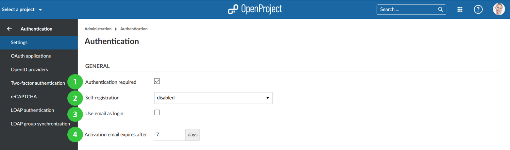
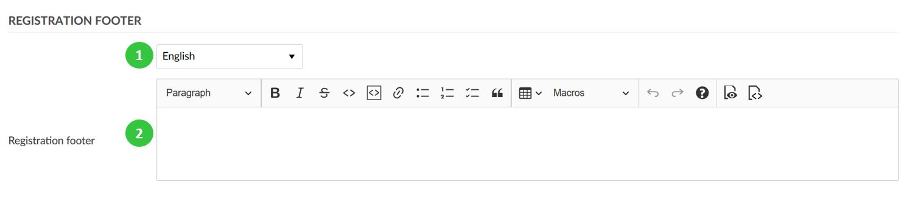
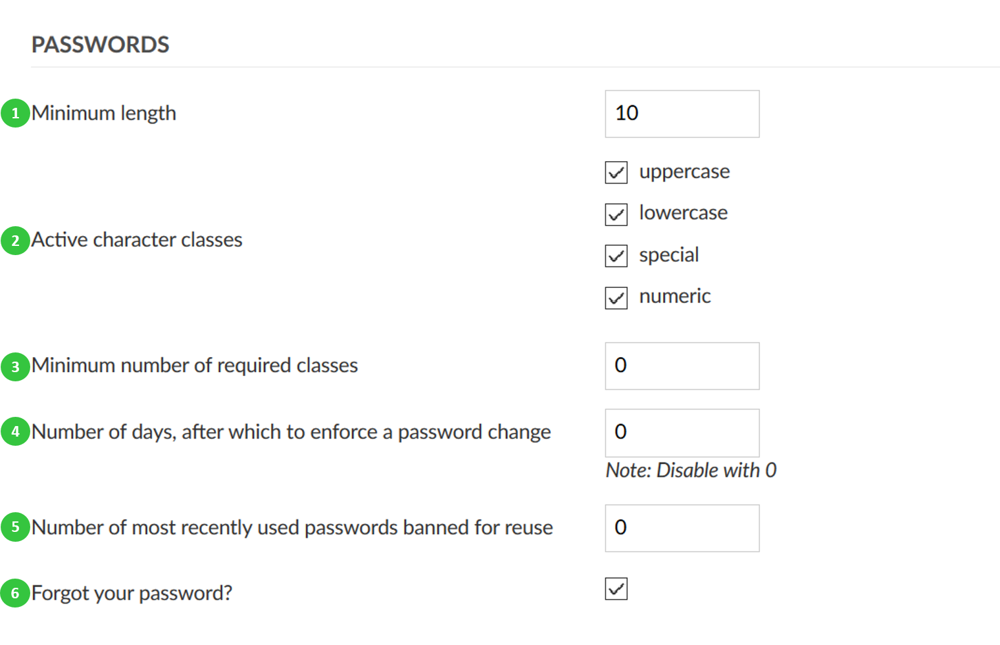
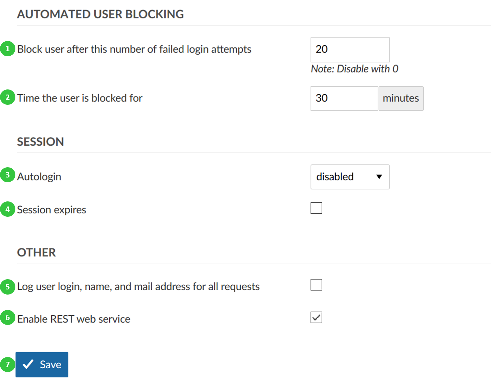

Authentication settings
To adapt general system authentication settings, navigate to -> Administration -> Authentication and choose -> Settings.
You can adapt the following under the authentication settings:
General authentication settings
-
Select if the authentication is required to access OpenProject. Watch out: If you un-tick this box your OpenProject instance will be visible to the general public without logging in. The visibility of individual projects depends on this setting.
-
Select an option for self-registration. Self-registration can either be disabled, or it can be allowed with the following criteria:
a) Account activation by email means the user receives an email and needs to confirm the activation.
b) Manual account activation means that a system administrator needs to manually activate the newly registered user.
c) Automatic account activation means that a newly registered user will automatically be active.
-
Define if the email address should be used as login name.
-
Define after how many days the activation email sent to new users will expire. Afterwards, you will have the possibility to re-send the activation email via the user settings.

You can define a footer for your registration emails under -> Administration -> Authentication -> Settings.
- Choose for which language you want to define the registration footer.
- Enter a text for the registration footer.

You can change various settings to configure password preferences in OpenProject.
- Define the minimum password length.
- Define the password strength and select what character classes are a mandatory part of the password.
- Define the minimum number of required character classes.
- Define the number of days, after which a password change should be enforced.
- Define the number of the most recently used passwords that a user should not be allowed to reuse.
- Activate the Forgot your password. This way a user will be able to reset the own password via email.

Other authentication settings
There can be defined a number of other authentication settings.
- Define the number of failed login attempts, after which a user will be temporarily blocked.
- Define the duration of the time, for which the user will be blocked after failed login attempts.
- Enable or disable the autologin option. This allows a user to remain logged in, even if he/she leaves the site. If this option is activated, the “Stay signed in” option will appear on the login screen to be selected.
- Activate the session expiration option. If you select this option, an additional field will open, where you will be able to define the inactivity time duration before the session expiry.
- Define to log user login, name, and mail address for all requests.
- Enable REST web service. This activates an API-Interface, which allows communication between external services (for example MS Office) and the instance.
- Do not forget to save your changes.
